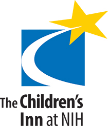

We encourage you to try volunteering as part of your experience in the United States, to help you engage and serve your American community in a new way. Community service in the United States includes different types of volunteer activities. From assisting the elderly to providing food for the homeless, there are many ways to volunteer through non-profit organizations, schools, museums, and religious organizations. Volunteers help others by giving their time to support issues that they care about. Volunteering can be an opportunity to work on a diverse team, with shared goals.
We invite you to consider volunteering at a one-time event, once a week, or once a month. Volunteering can offer you a chance to speak English outside the classroom. Throughout the year, English Now! organizes volunteer projects with local organizations to support students as they engage in rewarding, fun activities out in the community.
As a service to the Washington D.C.-area international community as well as our students and their families, we work with Community Service Partners to organize group volunteering activities. English Now! also supports students in identifying specific volunteer opportunities to match their interests.
English Now! organizes two Community Service Weeks each year, to call attention to opportunities to volunteer in the community. English Now! offers students and friends of the school a number of opportunities to engage in group volunteer activities, during these Community Service Weeks. Members of our team lead activities and help make the volunteering experience a good one for our international friends, in these activities.
During Community Service Weeks, English Now! organizes group activities with its Community Service Partners and, sometimes, with other organizations. Interested students volunteer at one-day events along with staff and instructors. Students chose the activity (or activities!) that most interest them and sign up to participate, in advance of the week of service.
Community Service Weeks are a great way to experience volunteering in the U.S. Ask us about the schedule for Community Service Weeks later this year, and we look forward to the possibility that you will join us for these activities.
English Now! community service partners include the following:

Bethesda Cares serves the homeless as well as people who are at risk of having utilities turned off or losing their homes. They provide food assistance, financial support, and counseling services.
The Children’s Inn at the National Institutes of Health is a special "Place Like Home" for families with very sick children from around the world. The Inn offers free housing for families whose children are at NIH to receive medical care. Volunteers serve children as well as accompanying family members.
The Spend Yourself Food Pantry provides food assistance to hungry people in the community. Its goal is to help the hungry and build relationships in a welcoming environment.
Senior living at Sunrise Senior Living in Bethesda is for older adults who value their independence, but need some help with daily activities. Volunteers participate in activities and engage in conversation with Sunrise residents.

The Washington Center for International Education helps international students and families through cultural, social, and emotional transitions in the U.S. education system and generally. Activities include Veritas Family Dinners and programs for teens.
We invite you to schedule an "Office Hour" appointment with our instructor and community service advisor, Jane Turner. Jane is available to answer questions about volunteering during a Community Service Week or on an on-going basis. Sign up at the reception desk to meet with Jane or email us!